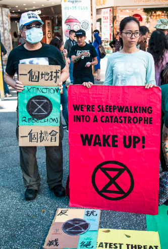
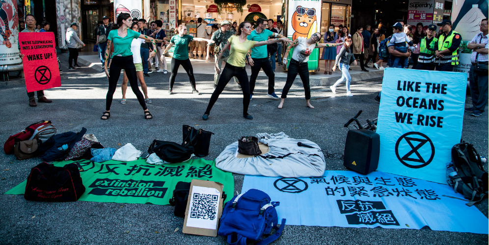
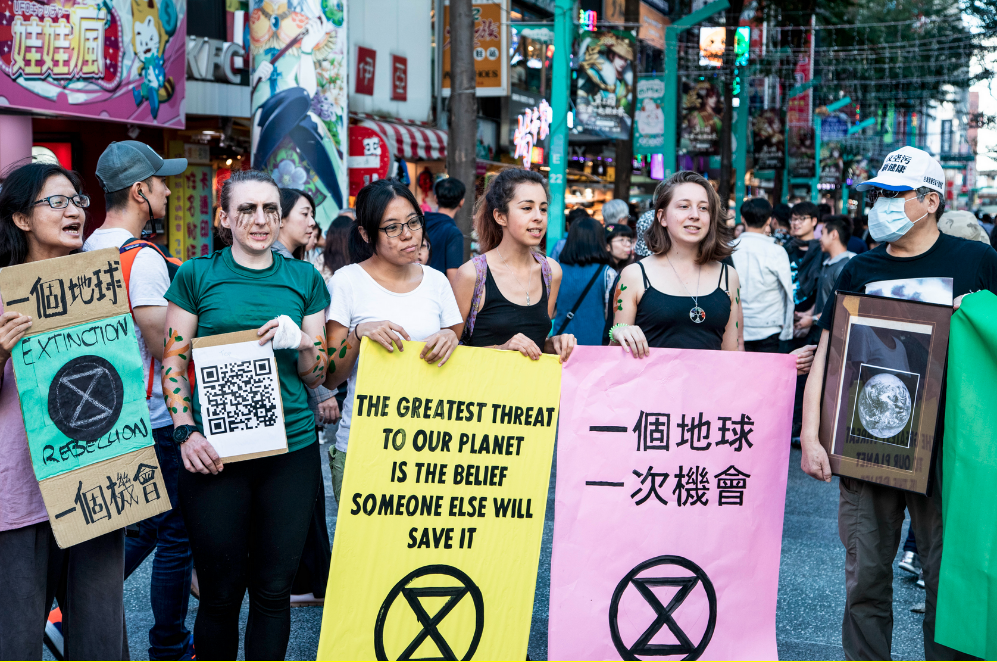
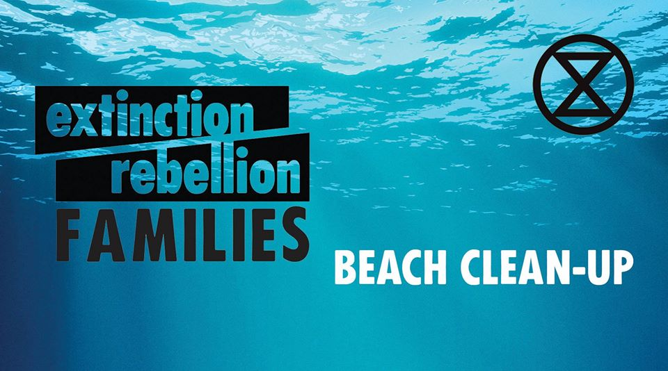

中文
24號西門町的活動出乎意料地順利！我們在此特別感謝台灣健康空氣行動聯盟與 當天參與行動的志工們! 感謝Mark Caltonhilll與黃士茵女士共同創作優美動 人的生態詩，我們專業的舞者Irina L身兼數職，編舞、舞蹈老師與身體彩繪， 我們的藝術家Karin Janssen 製作了吸睛的海報。當然，更感謝我們的好夥伴綠色和平， 出借麥克風與擴音機！反抗滅絕感謝大家的支持，使我們活動圓滿完成！

Photo Credit: Annabelle Chih

Photo Credit: Annabelle Chih

Photo Credit: Annabelle Chih
未來行動
下次淨灘活動!

這禮拜天同樣在福隆海灘淨灘，就目前氣象預報看來，當天福隆不會下雨，就上次經驗，福隆的確比較不會下雨， 但老天爺難捉摸。還是請大家週日早上出發前，密切注意我們的粉專或fb群組頁面，我們會即時更新活動訊息!
我們將一樣在Scubar 碰面，可能清理海灘或沿著海岸撿垃圾，看哪裡比較髒而決定， 歡迎大家參加淨灘或午餐或例行會議，別擔心，若不參加例行會議可先行離開 :)
暫定流程:
10-12淨灘
12-13:30午餐
13:30-15:00 例行會議
日期: 12月8日 (日) 地點: Scubar on the Beach
地址:新北市貢寮區東興街17-2 號
下週15號是我們的定期週日聚會，詳細資訊於下週公告！請密切關注:)
ENGLISH
What an amazing turnout at the action! A big thank you to Air Clean Taiwan for sponsering the event and to all the rebels who came. Thank you to Mark Caltonhill and 黃士茵 who wrote the beautiful peom. Thank you to Irina L, our choreographer, who choreographed an excellent dance! Thank you to Karin Janssen who made most of the beautiful posters. And a final thank you to Greenpeace for loaning us the speaker!
Photo Credit: Annabelle Chih
Photo Credit: Annabelle Chih
Photo Credit: Annabelle Chih
COMING-UP ACTIONS
Next beach clean-up!
Our next beach clean-up will be this Sunday. I just checked the forecast and the skies look clear at the moment. Please look at the facebook page or group on Sunday morning to make sure that the clean-up is not cancelled. The weather is usually much better in Fulong anyways.
We will meet at Scubar and either clean the beach or along the coast- depending on what is the dirtiest. You are welcome to come for just the beach clean-up, lunch, or meeting! All up to you. If you don’t want to stay for the meeting no worries!
Day: 12/8/19 (Sunday) Location: Scubar on the Beach
Address: No. 17-2, Dongxing Street, Gongliao District, New Taipei City, 228
Tentative Schedule:
10-12am Beach Clean-Up
12-1.30pm Lunch
1.30-3pm Meeting
We will be having the regular meeting next week on the 15th. More information out next week.